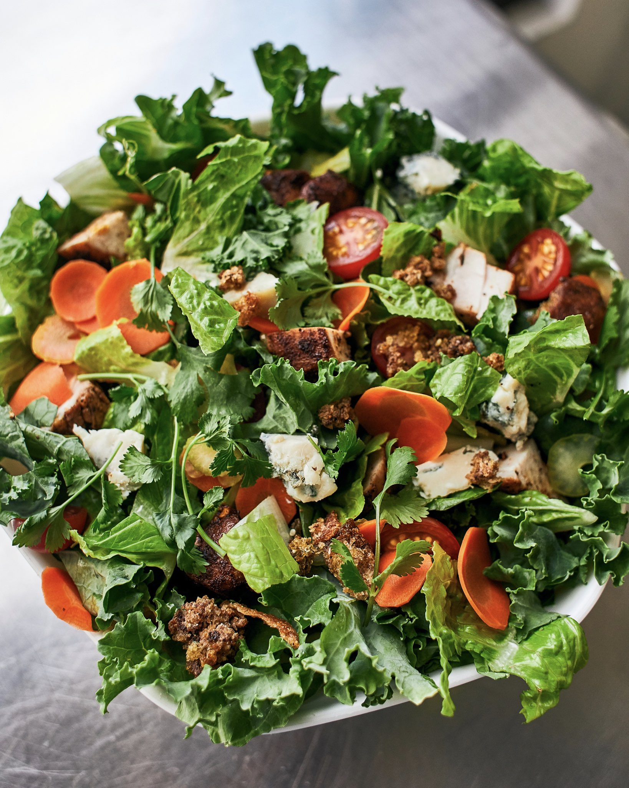

Blackened Chicken Salad

Description
Healthy eating evaded me for a very long time. Growing up, I was frequently (and deservedly) the butt of jokes from family and friends over my extremely picky eating habits. This all changed one fateful morning during my time at the University of Minnesota.
As many twenty-something are wont to do in a midwestern college town, I was up until the wee hours of the night partying with friends. I woke the next morning with an inexplicable yet insatiable craving for chili. I went to the nearest Potbelly's and, for the firs time, downed an entire bowl in maybe a minute flat. Since then, I've been much more adventurous in my eating habits. One of my favorite "fast food" chains is SweetGreen, and I am a straight-up FIEND for their pesto vinaigrette. Thus, this recipe!
Ingredients
- Store-bought pesto
- Olive oil
- Red wine vinegar
- Kale
- Spinach
- Several pieces of blackened chicken (frozen works in a pinch)
- One or two whole carrots
- One tart apple (Granny Smith or Honeycrisp work well)
- 1 cup chopped walnuts
Steps
- Cook the chicken as directed.
- Wash the greens under the sink, spinning them dry to prevent too much moisture from seeping in.
- Add the greens to your salad bowl.
- Dice one whole apple (minus the core). Add to the bowl.
- Grate the carrots directly into the bowl, adding walnuts and any other toppings as desired.
- When the chicken is cooked, cube and add to bowl.
- In a small bowl, add a spoonful of pesto with equal-sized glugs of olive oil and red wine vinegar.
- Stir to combine with a fork and drizzle into the salad bowl.
- Mix and serve.
Return to Home